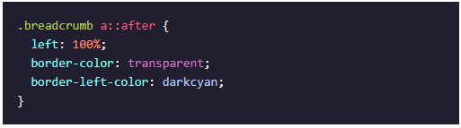
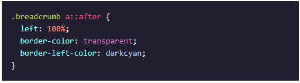

This is my Cheat Sheet!
Here you can find shortened summaries of all the content
from the Front-End Engineer Career Path on Codecademy!
Here you can find shortened summaries of all the content
from the Front-End Engineer Career Path on Codecademy!
To start a new HTML file, you need to create an .html file in your working directory.
It's recommended to name your starting page 'index.html'.
In said HTML file, you need to insert the following HTML tags in this order:
<!DOCTYPE html>, <html> (opening and closing tag),
<head> (opening and closing tag) and <body> (opening and closing tag).
In the end, your final HTML "skeleton" should look like this:
<!DOCTYPE html>
<html>
<head>
</head>
<body>
</body>
</html>
The <p> tag defines a paragraph of text. It's a block element.
Inside it, we can add any inline element we like, like <span> or <a>, but no block elements.
By default, browsers style a paragraph with a margin on top and at the bottom.
This causes two consecutive paragraphs to be spaced, replicating what we think of a “paragraph” in printed text.
The <span> tag tag is an inline tag that can be used to create a section in a paragraph that can be targeted using CSS.
The <blockquote> HTML tag is useful to insert citations in the text. Browsers by default apply a margin to the blockquote element.
The <code> tag is especially useful to show code, because browsers give it a monospaced font.
This tag is typically wrapped in a pre tag, because the code element ignores whitespace and line breaks.
| Tag | Name | Description |
|---|---|---|
| <table> | Table | The wrapper element for all HTML tables. |
| <thead> | Table Head | The set of rows defining the column headers in a table. |
| <tbody> | Table Body | The set of rows containing the actual table data. |
| <tr> | Table Row | The table row container. |
| <td> | Table Data | The table data container inside a <tr>. |
| <tfoot> | Table Foot | The set of rows defining the footer in a table. |
| colspan | Column Span | Defines how many columns a td element should span. |
| rowspan | Row Span | Defines how many rows a td element should span. |
The purpose of a form is to allow users to input information and send it.
The form’s action attribute determines where the form’s information goes.
The form’s method attribute determines how the information is sent and processed.
To add fields for users to input information we use the input element and set the type attribute to a field of our choosing.
Setting type to "text" creates a single row field for text input.
Setting type to "password" creates a single row field that censors text input.
Setting type to "number" creates a single row field for number input.
Setting type to "range" creates a slider to select from a range of numbers.
Setting type to "checkbox" creates a single checkbox that can be paired with other checkboxes.
Setting type to "radio" creates a radio button that can be paired with other radio buttons.
Setting type to "text" and adding the list attribute will pair the input with a datalist
element if the list of input and the id of datalist are the same.
Setting type to "submit" creates a submit button.
A select element is populated with option elements and renders a dropdown list selection.
A datalist element is populated with option elements and works with an input to search through choices.
When a form is submitted, the name of the fields that accept input and the value of those fields are sent as name=value pairs.
Client-side validations happen in the browser before information is sent to a server.
Adding the required attribute to an input related element will validate that the input field has information in it.
Assigning a value to the min attribute of a number input element will validate an acceptable minimum value.
Assigning a value to the max attribute of a number input element will validate an acceptable maximum value.
Assigning a value to the minlength attribute of a text input element will validate an acceptable minimum number of characters.
Assigning a value to the maxlength attribute of a text input element will validate an acceptable maximum number of characters.
Assigning a regex to pattern matches the input to the provided regex.
If validations on a form do not pass, the user gets a message explaining why and the form cannot be submitted.
CSS works with selectors, which work with "priorities".
The first selector refers to HTML tags. For example to style a <div> you type 'div {}'' into the CSS file.
The second selectors selects classes in your HTML file. To style <div class="test"> you type '.test {}' into your CSS file.
The final selector selects your HTML objects by ID. If you'd like to style <div id="testid"> you need to add '#testid {}' into your CSS file.
The priority of the selectors is HTML Tag < Class < ID.
A declaration in an ID selector overrides a declaration in a class selector.
Both override declarations of Tag selectors.
The property background-color sets the color of the background, while color sets the the text-color.
With background-image you can set the background of an element to an image.
With font-family, you define the typeface of an element.
Font-size and font-weight control the size of and how thin or thick the displayed text is.
Opacity can make an element transparent.
The line-height property modifies the vertical spacing between lines of text.
The letter-spacing property changes how far apart individual letters are.
The text-align property places text in the left, right, or center of its parent container.
The word-spacing property changes how far apart individual words are.
The position of an element can be modified with the position property.
When set to relative, an element's position is relative to its default position on the page.
When set to absolute, an element's position is relative to its closest positioned parent element.
It can be pinned to any part of the web page, but the element will still move with the rest of the document when the page is scrolled.
When set to fixed, an element's position can be pinned to any part of the web page. The element will remain in view no matter what.
When set to sticky, an element can stick to a defined offset position when the user scrolls its parent container.
The z-index of an element specifies how far back or how far forward an element appears on the page when it overlaps other elements.
The display property allows you to control how an element flows vertically and horizontally in a document.
When set to inline, elements take up as little space as possible, and they cannot have manually adjusted width or height.
When set to block, elements take up the width of their container and can have manually adjusted heights.
When set to inline-block, elements can have set width and height, but they can also appear next to each other and do not take up their entire container width.
The float property moves elements as far left or right as possible on a web page.
The clear property clears the left or right side (or both) of an element.
With the cursor property, you can set the cursor to e. g. 'Pointer'.
In addition to styling elements themselves, other signifiers and visual feedback can be utilized during user interaction.
For this, the pseudo-classes :link, :visited, :hover and :active can be used.
:link basically has the same meaning as the selector without this pseudo-class.
:visited styles the link after it already has been clicked.
:hover adjusts the style while the mouse is hovering over the element in question.
:active adjusts the style while the element is active, e. g. being clicked.
The ordering of link state pseudo-class rules is important to reveal the proper information.
By adding breadcrumb navigation to a site, users can get a quick feel for where they are on a site. It also hints at the breadth of the site.
Breadcrumbs are usually displayed as a horizontal list of pages and take up minimal space.
Users expect to find them in the header, left-aligned, and below any primary navigation. Typically they are separated with a '>' or a '/' symbol.
Through some tricks with ::before and ::after, you can e. g. design your breadcrumbs as arrows.

 



There are two important components to a flexbox layout: flex containers and flex items.
A flex container is an element on a page that contains flex items. All direct child elements of a flex container are flex items.
This distinction is important because some of the properties apply to flex containers while others apply to flex items.
The following properties can all be set on a flex-container:
When the display property is set to 'flex', it changes an element to a block-level container with flex items inside of it.
When the display property is set to 'inline-flex', it allows multiple flex containers to appear inline with each other.
The justify-content property is used to space items along the main axis (mostly left to right).
The align-items property is used to space items along the cross axis (mostly top to bottom).
The flex-wrap specifies that elements should shift along the cross axis if the flex container is not large enough.
The align-content property is used to space rows along the cross axis.
The flex-direction property is used to specify the main and cross axes.
The flex-flow property is used to specify flex-wrap and flex-direction in one declaration.
The following properties can all be set on a flex-item:
The flex-grow property is used to specify how much space (and in what proportions) flex items absorb along the main axis.
The flex-shrink property is used to specify how much flex items shrink and in what proportions along the main axis.
The flex-basis property is used to specify the initial size of an element styled with flex-grow and/or flex-shrink.
The flex property is used to specify flex-grow, flex-shrink, and flex-basis in one declaration.
CSS Grid can be used to layout entire web pages.
Whereas Flexbox is mostly useful for positioning items in a one-dimensional layout, CSS grid is most useful for two-dimensional layouts,
providing many tools for aligning and moving elements across both rows and columns.
The following properties can all be set on a grid-container:
The grid-template-columns property defines the number and sizes of the columns of the grid.
The grid-template-rows property defines the number and sizes of the rows of the grid.
The grid-template property is a shorthand for defining both grid-template-rows and grid-template-columns in one line. Format: rows / columns.
The row-gap property puts blank space between the rows of the grid.
The column-gap property puts blank space between the columns of the grid.
The gap property is a shorthand for defining both row-gap and column-gap in one line. Format: row-gap column-gap.
The following properties can all be set on a grid-item:
The grid-row-start and grid-row-end properties make elements span certain rows of the grid.
The grid-column-start and grid-column-end properties make elements span certain columns of the grid.
The grid-area property is a shorthand for grid-row-start, grid-column-start, grid-row-end, and grid-column-end in one line. Format: row-start / column-start / row-end / column-end.
There are following additional properties that you can use to harness the power of CSS Grid Layout:
The following properties can all be set on a grid-container:
The grid-template-areas property specifies grid named grid areas.
The justify-items property specifies how grid-items should spread inside their column from left to right.
The justify-content property specifies how the columns should spread inside their container from left to right.
The align-items property specifies how grid-items should spread inside their row from top to bottom.
The align-content property specifies how the rows should spread inside their container from top to bottom.
The grid-auto-rows property specifies the height of rows added implicitly to the grid.
The grid-auto-columns property specifies the width of columns added implicitly to the grid.
The grid-auto-flow property specifies in which direction implicit elements should be created.
The following properties can all be set on a flex-item:
The justify-self property specifies how a single element should position itself with respect to the row axis and overrides justify-items.
The align-self property specifies how a single element should position itself with respect to the column axis and overrides align-items.
Incorporating relative sizing starts by using units other than pixels. Following properties can be used:
The em property represents the font-size of the elements relative to the font-size of the parent element.
The rem property represents the font-size of the elements relative to the font-size of the root element.
The min-width property ensures a minimum width for an element.
The max-width property ensures a maximum width for an element.
The min-height property ensures a minimum height for an element.
The max-height property ensures a maximum height for an element.
To responsivly scale videos and images, the following properties can be used:
The overflow property with value hidden defines that media will be cut, if it's larger than its container.
To then adjust the media to the container, you should set max-width to 100%, height to auto and display to block.
You can write media queries to help with different screen sizes.
For media queries to work for mobile devices, you need to set the following tag in your HTML file:
meta name="viewport" content="width=device-width, initial-scale=1"/
Media queries require media features. Media features are the conditions that must be met to render the CSS within a media query.
Media features can detect many aspects of a user’s browser, including the screen’s width, height, resolution, orientation, and more.
The and operator requires multiple media features to be true at once.
A comma separated list of media features only requires one media feature to be true for the code within to be applied.
The best practice for identifying where media queries should be set is by resizing the browser to determine where the content naturally breaks.
Natural breakpoints are found by resizing the browser.
CSS Transitions are a powerful tool for providing visual feedback to users.
CSS Transitions have 4 components:
A property that will transition.
The duration which describes how long the transition takes.
The timing function that describes the transition’s acceleration.
The delay to pause before the transition will take place.
Many properties’ state changes can be transitioned, including color, background color, font size, width, and height.
all is also a valid transition property that causes every changing property to transition.
The shorthand property transition can be used to describe all four components of a transition at once.
By using the comma (,) operator, many transitions can be described in one CSS rule.
CSS animations are made up of two basic building blocks: Keyframes and Animation Properties.
Keyframes are the foundation of CSS animations. They define what the animation looks like at each stage of the animation timeline.
Each @keyframes is composed of:
Name of the animation: A name that describes the animation, for example, "bounceIn".
Stages of the animation: Each stage of the animation is represented as a percentage.
0% represents the beginning state of the animation. 100% represents the ending state of the animation. Multiple intermediate states can be added in between.
CSS Properties: The CSS properties defined for each stage of the animation timeline.
Once the @keyframes are defined, the animation properties must be added in order for your animation to function.
Animation properties do two things:
They assign the @keyframes to the elements that you want to animate.
They define how it is animated.
The animation properties are added to the CSS selectors that you want to animate. You must add the following two animation properties for the animation to take effect:
animation-name: The name of the animation, defined in the @keyframes.
animation-duration: The duration of the animation, in seconds (e.g., 5s) or milliseconds (e.g., 200ms).
Each animation property can be defined individually, but for cleaner and faster code, it’s recommended that you use the animation shorthand.
All the animation properties are added to the same animation property.
The script element has an opening and closing tag. You can embed JavaScript code inbetween the opening and closing script tags.
You link to external JavaScript files with the src attribute in the opening script tag.
By default, scripts are loaded and executed as soon as the HTML parser encounters them in the HTML file.
The HTML parser waits to load the entire script before from proceeding to parse the rest of the page elements.
The defer attribute ensures that the entire HTML file has been parsed before the script is executed.
The async attribute will allow the HTML parser to continue parsing as the script is being downloaded, but will execute immediately after it has been downloaded.
We learned the following on variables:
Variables hold reusable data in a program and associate it with a name.
The var keyword is used in pre-ES6 versions of JS.
let is the preferred way to declare a variable when it can be reassigned, and const is the preferred way to declare a variable with a constant value.
Variables that have not been initialized store the primitive data type undefined.
Mathematical assignment operators make it easy to calculate a new value and assign it to the same variable.
The + operator is used to concatenate strings including string values held in variables.
In ES6, template literals use backticks ` and ${} to interpolate values into a string.
The typeof keyword returns the data type (as a string) of a value.
An if checks a condition and will execute a task if that condition evaluates to true.
if...else statements make binary decisions and execute different code blocks based on a provided condition.
We can add more conditions using else if statements.
Comparison operators, including <, >, <=, >=, === and !== can compare to values.
The logical "and" operator, &&, checks if both provided expressions are truthy.
The logical "or" operator, ||, checks if either provided expression is truthy.
The bang operator, !, switches the truthiness and falsiness of a value.
The ternary operator, ?, is shorthand to simplify concise if...else statements.
A switch statement can be used to simplify the process of writing multiple else if statements.
The break keyword stops the remaining cases from being checked and executed in a switch statement.
A function is a reusable block of code that groups together a sequence of statements to perform a specific task.
A function declaration: function greetWorld(){}
A parameter is a named variable inside a function’s block which will be assigned the value of the argument passed in when the function is invoked.
To call a funtion in your code: greetWorld();
ES6 introduces new ways of handling arbitrary parameters through default parameters which allow us to assign a default value to a parameter in case no argument is passed into the function.
To return a value from a function, we use a return statement.
To define a function using function expressions: const calculateArea = function(){};
To define a function using arrow function notation: const calculateArea = () => {};
Scope refers to where variables can be accessed throughout the program, and is determined by where and how they are declared.
Blocks are statements that exist within curly braces {}.
Global scope refers to the context within which variables are accessible to every part of the program.
Global variables are variables that exist within global scope.
Block scope refers to the context within which variables are accessible only within the block they are defined.
Local variables are variables that exist within block scope.
Global namespace is the space in our code that contains globally scoped information.
Scope pollution is when too many variables exist in a namespace or variable names are reused.
Arrays are lists that store data in JavaScript.
Arrays are created with brackets [].
Each item inside of an array is at a numbered position, or index, starting at 0.
We can access one item in an array using its index, with syntax like myArray[0].
We can also change an item in an array using its index, with syntax like myArray[0] = 'new string'.
Arrays have a length property, which allows you to see how many items are in an array.
Arrays have their own methods, including .push() and .pop(), which add and remove items from an array, respectively.
Arrays have many methods that perform different tasks, such as .slice() and .shift().
Some built-in methods are mutating, meaning the method will change the array, while others are not mutating. You can always check the documentation.
Variables that contain arrays can be declared with let or const. Even when declared with const, arrays are still mutable. However, a variable declared with const cannot be reassigned.
Arrays mutated inside of a function will keep that change even outside the function.
Arrays can be nested inside other arrays.
To access elements in nested arrays chain indices using bracket notation.
Loops perform repetitive actions so we don’t have to code that process manually every time.
A for loop loops for an specific amount of time.
A nested for loop is a loop inside another loop.
while loops allow for different types of stopping conditions.
Stopping conditions are crucial for avoiding infinite loops.
do...while a loops run code at least once— only checking the stopping condition after the first execution.
The break keyword allows programs to leave a loop during the execution of its block.
Objects store collections of key-value pairs.
Each key-value pair is a property—when a property is a function it is known as a method.
An object literal is composed of comma-separated key-value pairs surrounded by curly braces.
You can access, add or edit a property within an object by using dot notation or bracket notation.
We can add methods to our object literals using key-value syntax with anonymous function expressions as values or by using the new ES6 method syntax.
We can navigate complex, nested objects by chaining operators.
Objects are mutable—we can change their properties even when they’re declared with const.
Objects are passed by reference— when we make changes to an object passed into a function, those changes are permanent.
We can iterate through objects using the for...in syntax.
The object that a method belongs to is called the calling object.
The this keyword refers to the calling object and can be used to access properties of the calling object.
Methods do not automatically have access to other internal properties of the calling object.
The value of this depends on where the this is being accessed from.
We cannot use arrow functions as methods if we want to access other internal properties.
JavaScript objects do not have built-in privacy, rather there are conventions to follow to notify other developers about the intent of the code.
The usage of an underscore before a property name means that the original developer did not intend for that property to be directly changed.
Setters and getter methods allow for more detailed ways of accessing and assigning properties.
Factory functions allow us to create object instances quickly and repeatedly.
There are different ways to use object destructuring: one way is the property value shorthand and another is destructured assignment.
.forEach() is used to execute the same code on every element in an array but does not change the array and returns undefined.
.map() executes the same code on every element in an array and returns a new array with the updated elements.
.filter() checks every element in an array to see if it meets certain criteria and returns a new array with the elements that return truthy for the criteria.
.findIndex() returns the index of the first element of an array that satisfies a condition in the callback function. It returns -1 if none of the elements in the array satisfies the condition.
.reduce() iterates through an array and takes the values of the elements and returns a single value.
All iterator methods take a callback function, which can be a pre-defined function, a function expression, or an arrow function.
First step: Review stack trace.
Second step: Using logging to discover silent bugs.
Third step: Research in documentation (e.g. MDN).
First step: StackOverflow!!!.
The document keyword grants access to the root of the DOM in JavaScript.
The DOM Interface allows you to select a specific element with CSS selectors by using the .querySelector() method.
You can access an element directly by its ID with the .getElementById() method which returns a single element.
You can access an array of elements with .getElementsByClassName() and .getElementsByTagName(), then call a single element by referencing its placement in the array.
The .innerHTML and .style properties allow you to modify an element by changing its contents or style respectively.
You can create, append, and remove elements by using the .createElement(), .appendChild() and .removeChild() methods respectively.
The .onclick property can add interactivity to a DOM element based on a click event.
The .children property returns a list of an element’s children and the .parentNode property returns the element’s closest connected node in the direction towards the root.
You can register events to DOM elements using the addEventListener() method.
The addEventListener() method takes to arguments: an event type and an event handler function.
When an event is triggered on the event target, the registered event handler function executes.
Event handler functions can also be registered as values of onevent properties of their event target.
Event object properties like .target, .type, and .timeStamp are used to provide information about the event.
The addEventListener() method can be used to add multiple event handler functions to a single event.
The removeEventListener() method stops specific event handlers from “listening” for specific events firing.
Classes are templates for objects.
JavaScript calls a constructor method when we create a new instance of a class.
Inheritance is when we create a parent class with properties and methods that we can extend to child classes.
We use the extends keyword to create a subclass.
The super keyword calls the constructor() of a parent class.
Static methods are called on the class, but not on instances of the class.
Modules are reusable pieces of code in a file that can be exported and then imported for use in another file.
This modular strategy is sometimes called separation of concerns and is useful for debugging, reusing code and keeping information private.
Modules are implemented using the export and import keywords.
Errors will prevent a program from executing unless it is handled.
Errors can be created using the Error() function.
Errors can be thrown using the throw keyword.
The try...catch statement can handle thrown errors.
In the try block, errors can be anticipated, while the cought error will be handled in the catch block.
Mocha is a testing framework for JavaScript which can be installed using npm.
You can organize your tests using the describe() and it() keyword.
Assertions> are made with the assert keyword imported from node itself.
Some possibilities are assert.equal(), assert.strictEqual() and assert.deepEqual().
Tests should run isolated and should be written in the four phases Setup, Exercise, Verify and Teardown.
It is advised to use the Red-Green-Refactor-Cycle of the Test-Driven-Development-Methodology.
Promises are JavaScript objects that represent the eventual result of an asynchronous operation.
Promises can be in one of three states: pending, resolved, or rejected.
We construct a promise by using the new keyword and passing an executor function to the Promises constructor method.
setTimeout() is a Node function which delays the execution of a callback function using the event-loop.
We use .then() with a success handler callback containing the logic for what should happen if a promise resolves.
We use .catch() with a failure handler callback containing the logic for what should happen if a promise rejects.
Promise composition enables us to write complex, asynchronous code that’s still readable. We do this by chaining multiple .then()'s and .catch's.
To use Promise composition correctly, we have to remember to return Promises constructed within a .then().
We should chain multiple Promises rather than nesting them.
To take advantage of concurrency, we can use Promise.all().
async...await is syntactic sugar built on native JavaScript promises and generators.
We declare an async function with the keyword async.
Inside an async function we use the await operator to pause execution of our function until an asynchronous action completes and the awaited promise is no longer pending.
await returns the resolved value of the awaited promise.
We can write multiple await statements to produce code that reads like synchronous code.
We use try...catch statements within our async functions for error handling.
We should still take advantage of concurrency by writing async functions that allow asynchronous actions to happen in concurrently whenever possible.
GET and POST requests can be created in a variety of ways.
We can use fetch() and async/await to asynchronous request data from APIs.
We can chain .then() methods to handle promises returned by the fetch() function.
For a POST request, the fetch() must include method: 'POST' and a body.
JSX is a syntax extension for JavaScript. It looks a lot like HTML
JSX is not valid JavaScript. Web browsers can't read it.
If a JavaScript file contains JSX code, then that file has to be compiled before reaching the browser.
A basic unit of JSX could look like this: const helloWorld = <h1>Hello world</h1>.
JSX can be saved in a variable, stored in an object or array or be passed to a function.
JSX elements also can have attributes, just like regular HTML elements.
JSX elements can be nested inside of other JSX elements. To improve readability, HTML-style line breaks and indentation can be used.
In this case, the multi-line JSX expression has to be wrapped in parentheses ().
JSX must have exactly one outermost element. The first opening tag and the final closing tag must belong to the same element.
JSX elements are rendered by the ReactDOM.render() function.
The JSX element, which has to be rendered, gets passed as the first argument, while the location gets passed as the second argument.
Grammar in JSX is mostly the same as in HTML.
One difference is the class-attribute. Since class is a reserved word in JavaScript, you have to use the className-attribute in JSX instead.
Another difference are self-closing tags.
While the forward-slash before the closing angle-bracket is optional in JavaScript, it is mandatory in JSX.
So <br> in JavaScript would have to be <br/> in JSX. Same goes for e. g. images.
We can include plain JavaScript in JSX expressions. For this we use curly braces {}.
So e. g. {2+3} inside an JSX expression would print 5, since the 2+3 would be executed.
We can include JavaScript variables in our JSX expressions in the same way. This is also how event listeners can be assigned to JSX elements.
If-Statements inside JSX expressions themselves don't work. Instead, there are multiple options on how to include conditionals.
The first option is to write an if statement outside of the JSX expression and include the result in the JSX expression.
Secondly, you can use the ternary operator inside the JSX expression ( x ? y : z).
Lastly, you can use the && operator. If the statement on the left results in true, the JSX expression on the right gets rendered.
The .map() function is one, that gets used often in React. It can be used to e. g. transform an array of elements to JSX expressions.
It also allows you to easily assign the key-attribute to list items. The key is not always necessary in JSX, but it never hurts to use them!
A component is a small, reusable chunk of code that is responsible for one job. That job is oftne to render some HTML.
One way to define a new React component is by using JavaScript classes, called class components.
A component class has to subclass the Component class from the React library (React.Component).
The name of a component class has to begin with a capital letter and should be written in UpperCamelCase.
Also, each component class has to atleast have a render() function which atleast returns an JSX expression.
A component instance can be rendered by using the ReactDOM.render() function and using the component class as first argument.
More advanced JSX concepts like multi-line JSX or variable attributes can also be used in components.
Components can also include more logic then just returning an JSX expression.
This can either be implemented in the render() function or in other functions. These other functions can then e. g. be used as event listeners for an JSX expression.
Components are able render other components.
For this, the main component has to import the other component, which thus has to be exported.
After the succesful export-import, the imported component can be rendered by being instanceiated in the render() function of the main component.
Props are the way for component to communicate with each other.
Props can be passed by assigning attributes to the instances of other component. The attribute has to follow the syntax: prop-name=value.
The receiving component can access the passed prop with this.props.prop-name.
The received prop can then be used for multiple purposes. It can be displayed, used for decisions or used to pass event handlers.
A specific prop is this.props.children. It contains all children elements between the opening and closing tag of instanceiated component.
In each file, outside of the component class, you can declare default props. These default props will be used, if a component expects a prop, but doesn't receive one.
State is a component's own way of handling dynamic information. Other than props, the state can not be influenced from the outside.
The initial state is set in the constructor of the component. this.state expects an object, which can include multiple key:value pairs.
The state can be accessed by calling this.state.key.
Later, the state can be updated by using this.setState(). This merges the object in the setState with the existing state from the constructor.
this.setState most commonly gets wrapped in a custom function. For this to work, the custom function has to be binded to this in the constructor.
this.setState automatically calls the render() function after changing the state.
Components that have a state are called stateful, while components without one are stateless.
One of the many React Programming Patterns includes one stateful Parent Component and two stateless Child Components.
The first stateless Child Component is tasked with displaying the current state of the stateful Parent Component.
For this, the state gets passed down to the Child Component as a prop. Said Child then uses the prop to display the Parent's state.
The second Child Component is tasked with updating / changing the state and thus the displayed information of it's Sibling Component.
For this, you firstly need to create an event handler in the Parent Component, which wraps the this.setState() function.
Then the created event handler gets passed to the Child as a prop. Here, you create another function, which uses and executes the prop.
Lastly, you use the created function in the Child Component as an event handler.
Now, if you execute said action, the Parent's state gets updated and sends the new state to the second Child to be displayed.